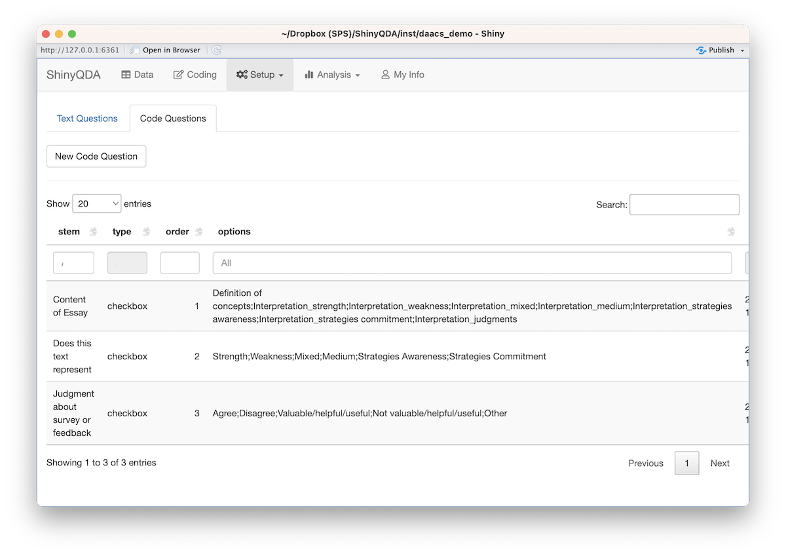

Installation
You can install the ShinyQDA package from Github using
the remotes package:
remotes::install_github('jbryer/ShinyQDA', dependencies = c('Depends', 'Imports', 'Suggests))Eventually you will be able to install from CRAN using the following command:
install.packages('ShinyQDA', dependencies = c('Depends', 'Imports', 'Suggests))Much of the ShinyQDA application is implemented using Shiny
modules. The package dependencies for each module are not isntalled
using the default dependencies values. Although a minor
inconvenience at installation time, this ensures that the
ShinyQDA minimizes the packages with strict dependencies
which is encouraged through the CRAN check process. If any required
packages are not available the module will display a message with list
of the missing packages in the Shiny application.
Creating New Project
To utilize the ShinyQDA application you need to
initialize it with some data. At minimum you need a data frame with two
columns: a unique identifier and the text data, although you can pass
any other columns along and they will be preserved for analysis later.
The following example is a small subset from the Diagnostic Assessment and Achievement of
College Skills (DAACS) which was analyzed for a paper title
College students’ responses to automated feedback on self-regulated
learning (Yu et al., 2023). DAACS assesses key
college skills in self-regulated learning, writing, mathematics and
reading comprehension. For the writing assessment students are asked to
identify strategies from their self-regulated learning they can improve
and how they will use them to be successful. Students received scores
from a machine learning algorithm and those scores are included to
demonstrate the rubric features of ShinyQDA. The
daacs_data data frame includes 17 essays along with their
writing and self-regulation scores from two coders/raters. This is a
subset of the 100 essays coded by five people for the Yu et al. (2023) paper.
You can run this application using the following command.
shiny::runApp(paste0(find.package('ShinyQDA'), '/daacs_demo/'))The remainder of this document will outline the steps on how we setup
the ShinyQDA with pre-existing data.
library(ShinyQDA)
data("daacs_data", package = 'ShinyQDA')
ShinyQDA::new_app(name = 'daacs_demo',
dir = getwd(),
qda_data = daacs_data,
id_column = 'id',
text_column = 'qda_text',
initialize_sentiment_dictionaries = TRUE,
run_app = FALSE)This command will create a director at name/dir/, copy
an app.R Shiny script, and initialize a SQLite database
with the contents of the qda_data data frame parameter. You
can now run this application and begin working with your qualitative
data. The following section will discuss how we can populate the
ShinyQDA application with pre-existing data.
Note that if initialize_sentiment_dictionaries = TRUE
you will be prompted four times to download the four sentiment
dictionaries. This is required if you intend to do any sentiment
analysis. Please do check the licenses for each of these databases
before using in production.
Setting up coding and scoring schemes
The ShinyQDA package uses a SQLite database to store all
data. The qda() function is a wrapper to the database
providing functions to select, insert, and delete data using R functions
(i.e. no SQL knowledge required!). The following code will create the
qda object and load data from the package that including
codings, text responses, and rubric scores, respectively.
daacs_qda <- ShinyQDA::qda('daacs_demo/qda.sqlite')
data("daacs_codings", package = 'ShinyQDA')
data("daacs_text_responses", package = 'ShinyQDA')
data("daacs_rubric", package = 'ShinyQDA')Text Questions
Text questions are questions you want each coder to respond to about each text document. That is, there is one set of questions for each text document. Going the the Setup -> Questions menu in the application will allow you to add questions through the application. ShinyQDA currently supports checkbox questions, radio button questions, or open text fields. These questions show up on the left hand side when in the coding view.

Alternatively, you can add the text questions manually through the
qda object.
daacs_qda$add_text_question(stem = 'Non-responsive to prompt',
type = 'checkbox')
daacs_qda$add_text_question(stem = 'Additional comments about the text',
type = 'text')You can get a data frame with all the specified text questions using
the get_text_questions() function.
daacs_qda$get_text_questions()Code Questions
Code questions are similar to text questions except there can be multiple responses per text document. When a users highlights some text and clicks the Add Code button, a dialog box will appear. The first input is a place to enter individual codes (see next section) along with an arbitrary set of questions defined either in the Setup -> Questions UI or using the following commands.
daacs_qda$add_code_question(
stem = 'Content of Essay',
type = 'checkbox',
options = c('Definition of concepts',
'Interpretation_strength',
'Interpretation_weakness',
'Interpretation_mixed',
'Interpretation_medium',
'Interpretation_strategies awareness',
'Interpretation_strategies commitment',
'Interpretation_judgments')
)
daacs_qda$add_code_question(
stem = 'Does this text represent',
type = 'checkbox',
options = c('Strength',
'Weakness',
'Mixed',
'Medium',
'Strategies Awareness',
'Strategies Commitment')
)
daacs_qda$add_code_question(
stem = 'Judgment about survey or feedback',
type = 'checkbox',
options = c('Agree',
'Disagree',
'Valuable/helpful/useful',
'Not valuable/helpful/useful',
'Other')
)Codes
Codes are the core functionality for qualitative data anlysis. You
can define your codes using the application by going the Setup ->
Codebook page. Alternatively, you can add codes through the
qda object.
categories <- list(
'metacognition' = c('planning', 'monitoring', 'evaluation'),
'motivation' = c('mindset', 'test anxiety', 'mastery orientation'),
'self efficacy' = c('self efficacy for online learning',
'self efficacy for writing',
'self efficacy for mathematics',
'self efficacy for reading'),
'strategies' = c('managing environment', 'understanding', 'managing time', 'help seeking'),
'procrastination' = c()
)
codes <- c(names(categories), unlist(categories)) |> unname()
daacs_qda$add_codes(codes)The following chunk will loop through the codes setting the
parent parameter to maintain our coding hierarchy defined
in the ccategories list above.
Rubrics
In addition to coding text documents, you can specify a rubric that
coders/raters can use to evaluate a text docuement. The
daacs_rubric is the scoring rubric used for scoring (note
students see a different rubric designed to provide feedback in a
positive framework).
daacs_qda$add_rubric(
rubric_name = 'daacs',
description = 'DAACS Scoring Rubric',
rubric = daacs_rubric
)Importing existing data
The following sections provide sample code of how we can prepopulate the ShinyQDA application with pre-exisiting codings and scores.
Add existing codings
daacs_code_questions <- daacs_qda$get_code_questions()
for(i in seq_len(nrow(daacs_codings))) {
coder <- daacs_codings[i,]$coder
thetext <- daacs_data[daacs_data$id == daacs_codings[i,]$id,]$qda_text
pos <- gregexpr(daacs_codings[i,]$text, thetext, fixed = TRUE)[[1]]
coding_id <- daacs_qda$add_coding(
id = daacs_codings[i,]$id,
text = daacs_codings[i,]$text,
codes = strsplit(daacs_codings[i,]$codes, ';')[[1]],
start = pos,
end = pos + nchar(daacs_codings[i,]$text),
coder = coder
)
for(j in seq_len(nrow(daacs_code_questions))) {
stem <- daacs_code_questions[j,]$stem
if(stem %in% names(daacs_codings)) {
val <- daacs_codings[i,stem]
daacs_qda$add_code_question_response(coding_id = coding_id,
stem = stem,
answer = val,
coder = coder)
}
}
}